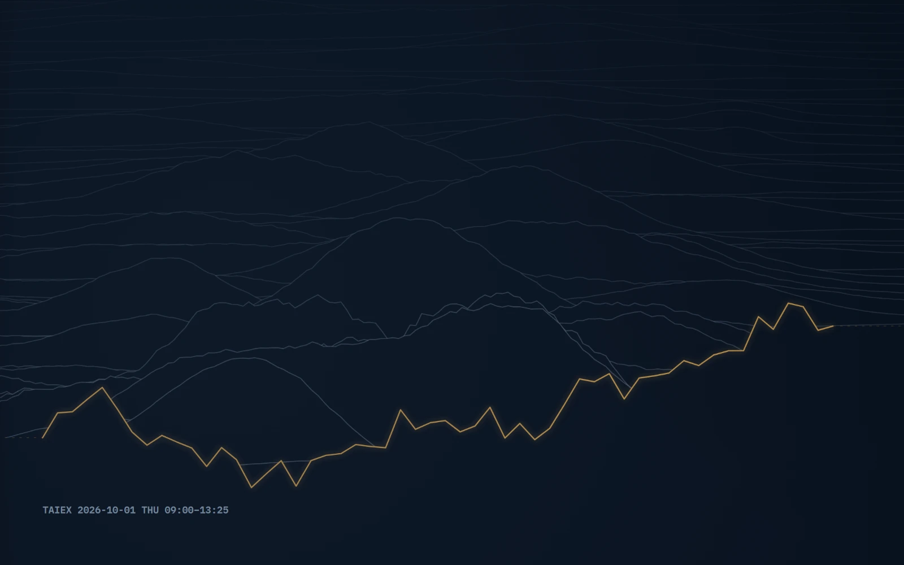
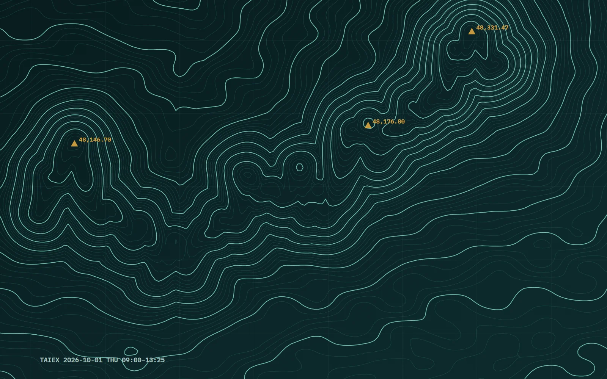
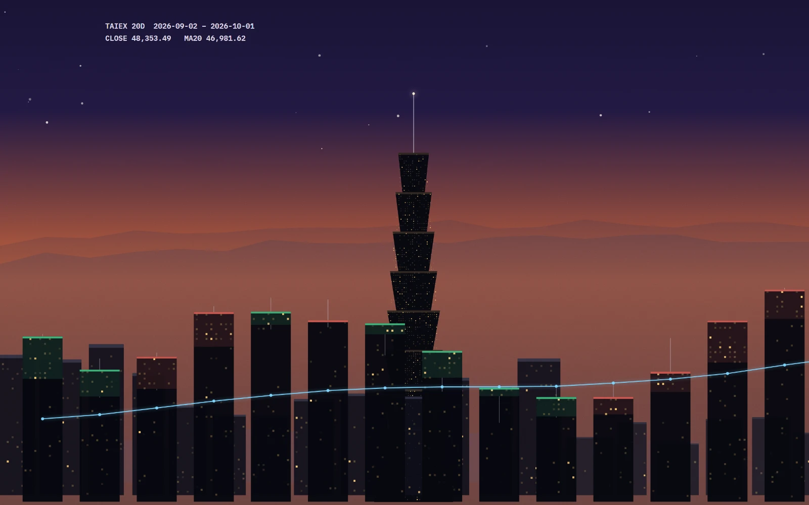
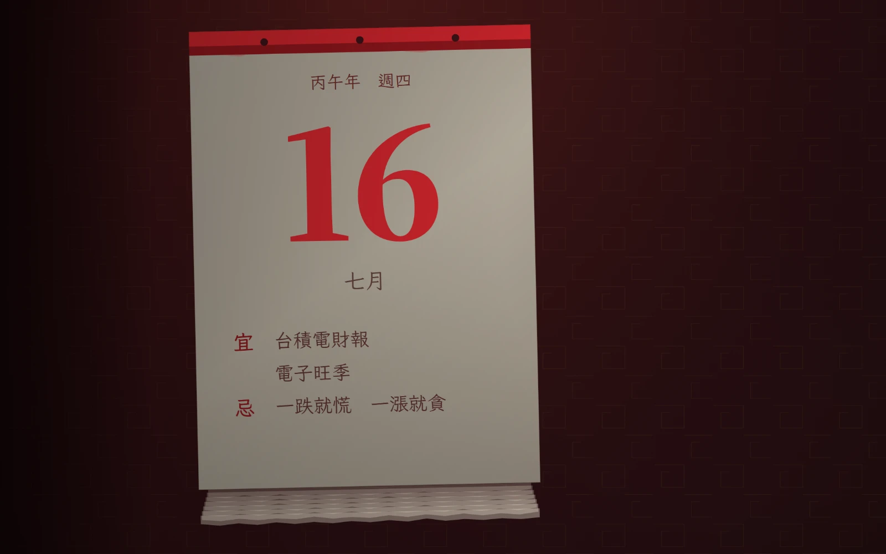
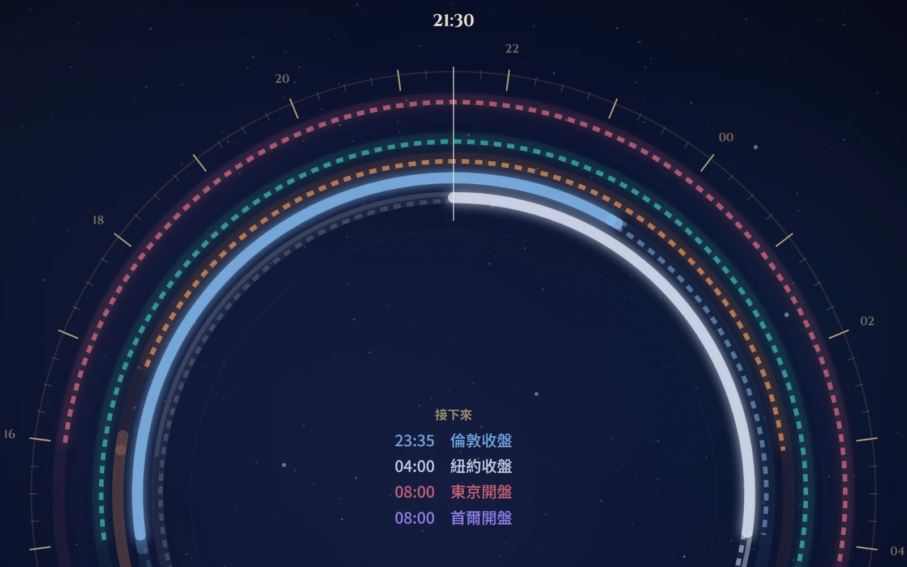

脊線
最前面那條金線，就是加權指數最後一個完整交易日的盤中走勢。
- 60 條山脊由遠到近互相遮擋，只有最近的金線是真實資料，其餘是裝飾；金色只留給資料。
- 時間對應橫軸，價格依當日高低點線性對應高度（呈現走勢形狀，不代表漲跌幅大小）；開盤前與收盤後以細虛線水平延伸，表示沒有資料。
- 金線下方標示交易日。
- 資料落後 3 個交易日以上時，右下角顯示「資料停在 M/D」。
預設是「不接管」，桌布維持原樣；從系統匣開設定視窗選一套主題，才會換成動態桌布。所有螢幕用同一套主題，每台螢幕依自己的原生解析度各畫一張。隨時改回「不接管」，或從系統匣「結束」，就會還原原本的桌布（原桌布若是 Windows 焦點，需自行到 Windows 設定切回）。
以測試資料繪製，圖為桌布局部；實際畫面依你的螢幕與當天資料而定。

最前面那條金線，就是加權指數最後一個完整交易日的盤中走勢。

把最後一個完整交易日的盤中走勢畫成一片山脊地形，價格越高地勢越高，最高處就在當日高點。

黃昏的城市，最前排 20 棟樓就是加權指數最近 20 個交易日的日 K。

一本撕頁黃曆，「宜」「忌」寫的是台股的日子。

24 小時的盤面，六個市場一圈一圈排開：現在誰在交易、接下來輪到誰。
時鐘・總經日曆・台股固定事件・台股動態事件・行情條，各自一個視窗、可各自開關、拖曳擺放；清單直接用滑鼠滾輪捲動。
每個螢幕的工作區切成 48×48 格線記錄位置與大小。編輯版面時可拖曳移動、調整大小，放開對齊格線，重疊就彈回。
版面依各螢幕工作區記錄，小工具可放在任一台螢幕，不同縮放比例（DPI）的螢幕之間定位正確。
Forex Factory 美國・歐元區・日本中高重要性事件，含預測/前值，跟隨系統時區顯示。
市值前百大財報公布日・法說會・股東會預告＋處置股（當日制、遇休市順延）；另列台指期結算、財報與月營收截止等固定事件。
13 檔跑馬燈：加權・台積電・道瓊・費半・SOFR…，紅漲綠跌。
五套主題（脊線・撕日曆・星盤・等高線・天際線）定時重畫（脊線、等高線、天際線依加權指數資料，撕日曆依休市日、融資與財報事件），每台螢幕依原生解析度設成 Windows 桌布。預設「不接管」；改回「不接管」或從系統匣結束時還原原桌布（Windows 焦點需自行切回）。
不需 Python、不需排程。台北時間每日 00・06・12・15・18 點抓取，程式啟動或睡眠恢復時錯過就補抓；單一來源失敗沿用上一份資料。
每 6 小時檢查新版，背景下載並驗證簽章後於系統匣通知；點選單即可立即更新；登入後 10 分鐘內就備妥的新版會自動安裝。
小工具是獨立的置底視窗，不嵌入 explorer 的視窗樹；explorer 重啟後自動重新置底。全螢幕、鎖定時暫停動畫。
深色半透明純色背景與圓角，透明度與主題色可在設定視窗調整。